Moon Road banners
Original category art for the detail hero (feature plan V4, step 5 of the banner chain): night water, the moon and its road of light, one motif per category. Each is 752 × 240 (2x of the hero's 376 × 120), quantised PNG, embedded in the plugin. Shown here as the hero draws it: the bottom and side scrims, corner marks, and a title over the bottom-left.
Category banners · 23
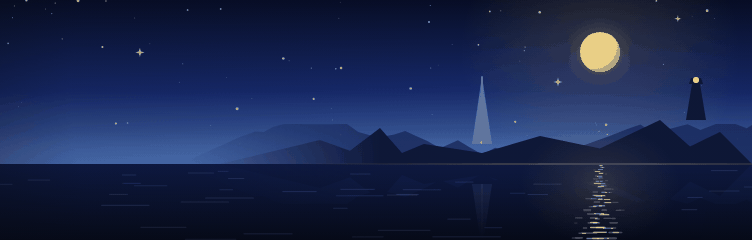
A Realm RebornSample quest · Lv 50
msq-arr@2x.pngA coast of old stone under a blue night; the lesser moon broken into falling embers, a crystal spire on the far shore.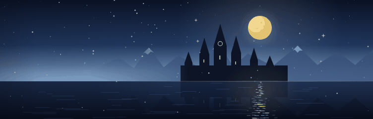
HeavenswardSample quest · Lv 50
msq-hw@2x.pngGothic spires of a holy city above snow, a great winged shape crossing the moon, falling snow.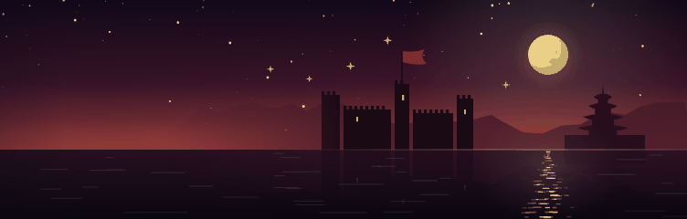
StormbloodSample quest · Lv 50
msq-sb@2x.pngA crimson night over a lakeside fortress and a far eastern tower across the water; a war banner lifts in the wind.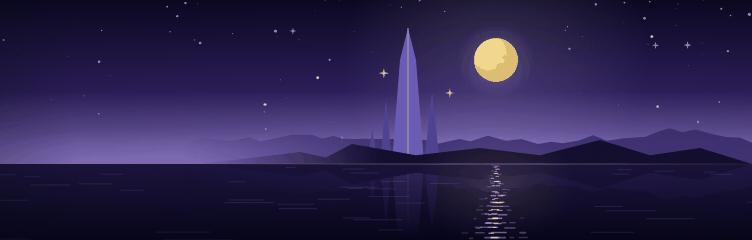
ShadowbringersSample quest · Lv 50
msq-shb@2x.pngNight returning to a sky drowned in light: violet dark breaking through a white glare, a crystal tower rising over a lake.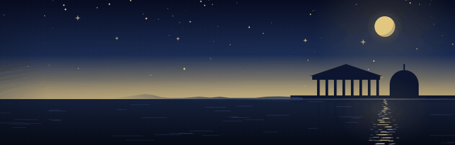
EndwalkerSample quest · Lv 50
msq-ew@2x.pngA blue world's limb rising beyond the moon, a colonnade of learning on the shore, a pale gold dawn at the edge of night.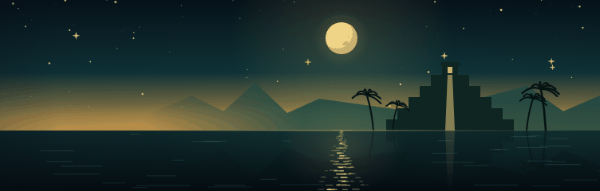
DawntrailSample quest · Lv 50
msq-dt@2x.pngA stepped golden pyramid above a green lowland, its stair a road of light, the sky warm at the horizon.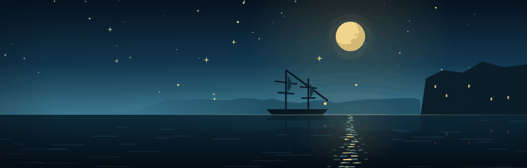
La NosceaSample quest · Lv 50
side-la-noscea@2x.pngSea cliffs and a sailing ship at anchor under a teal night; the harbour lamps low on the water.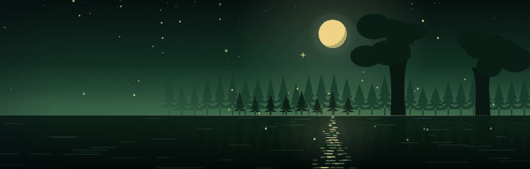
The Black ShroudSample quest · Lv 50
side-black-shroud@2x.pngA deep forest of giant trees at the water's edge, fireflies drifting over a still pool.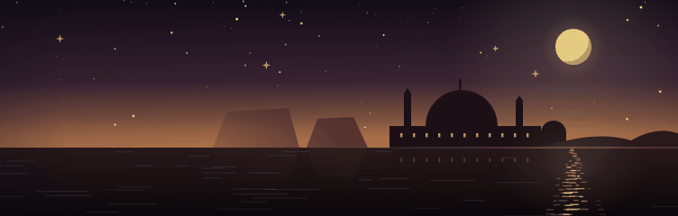
ThanalanSample quest · Lv 50
side-thanalan@2x.pngWarm desert night: mesas and dunes, a domed city of merchants glowing gold on the far shore.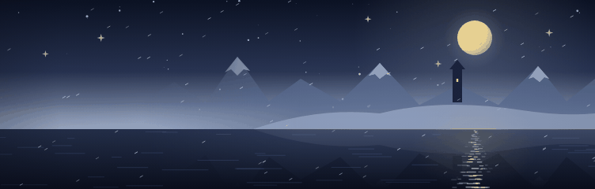
Coerthas and IshgardSample quest · Lv 50
side-coerthas@2x.pngSnowbound highlands under a pale moon: a lone watchtower on a white ridge, snow on the wind.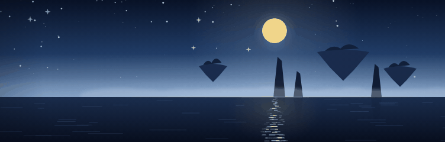
Dravania and AbalathiaSample quest · Lv 50
side-dravania@2x.pngIslands adrift in a sea of cloud, rookery spires of rock, a long-winged shape far off.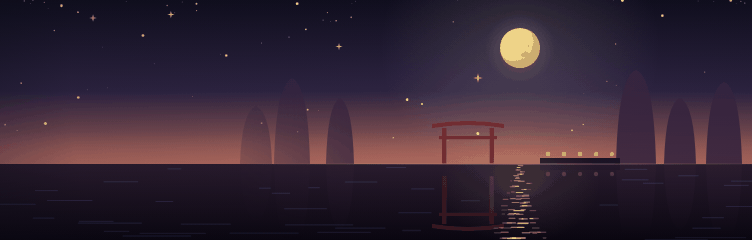
Gyr Abania and OthardSample quest · Lv 50
side-gyr-abania-othard@2x.pngTall karst peaks over a rose-dusk sea, a gate standing in the shallows, lanterns on a far pier.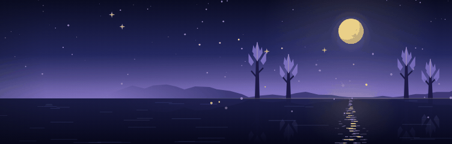
NorvrandtSample quest · Lv 50
side-norvrandt@2x.pngLakeland shallows under a violet night: trees of crystal, fae lights and petals on the water.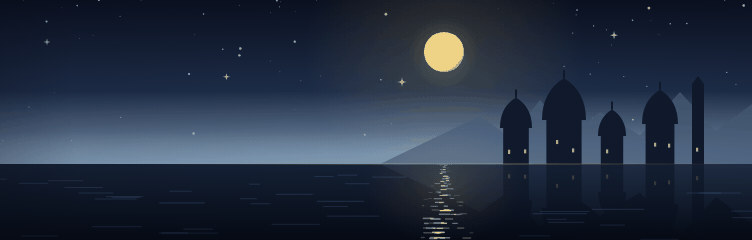
Ilsabard, Sharlayan and ThavnairSample quest · Lv 50
side-ilsabard@2x.pngA port city of onion domes and a scholar's tower across a still harbour, a cold northern ridge behind.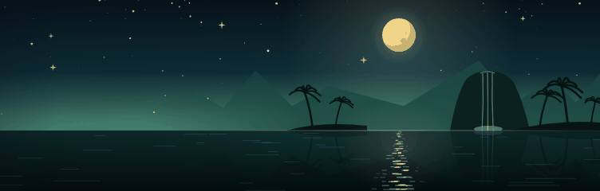
TuralSample quest · Lv 50
side-tural@2x.pngJungle highlands and a falling cascade under a warm teal night, palms leaning over the river mouth.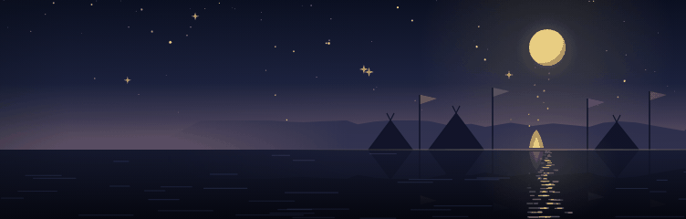
Allied SocietiesSample quest · Lv 50
allied-societies@2x.pngA night gathering by the water: tents and hide pennants round a fire, its sparks rising toward the moon.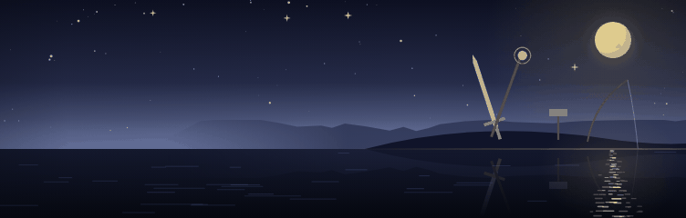
Class and Job QuestsSample quest · Lv 50
class-job@2x.pngA training ground on a knoll by the water: a sword and a staff crossed and planted, a hammer and a fishing rod beside them.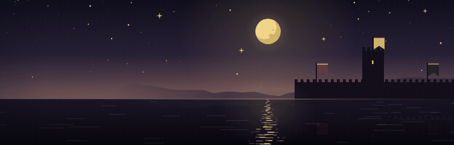
Grand CompanySample quest · Lv 50
grand-company@2x.pngA watchtower and rampart above a harbour, three company standards in storm red, serpent gold and flame black.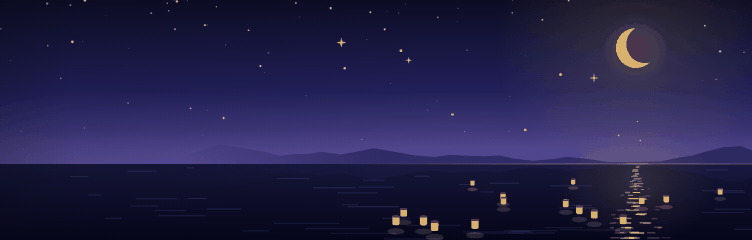
Seasonal EventsSample quest · Lv 50
seasonal@2x.pngA festival night: paper lanterns drifting on the water, fireworks opening over the far shore under a crescent.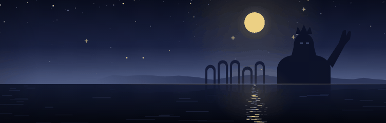
Chronicles of a New EraSample quest · Lv 50
chronicles@2x.pngA colossal ancient guardian half sunk in the sea, a ring of ruined arches beside it, the old tales written in the stars.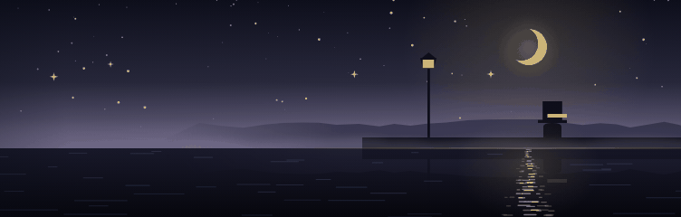
Hildibrand AdventuresSample quest · Lv 50
hildibrand@2x.pngA gentleman inspector's evening: a gas lamp on the quay, a top hat left on a bollard, a magnifier catching the crescent.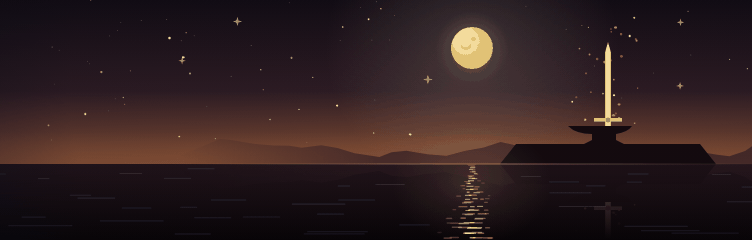
Relic Weapons and Unusual EndeavoursSample quest · Lv 50
relic@2x.pngAn anvil on a stone shelf by the water, a blade standing in it and glowing, sparks climbing toward the moon.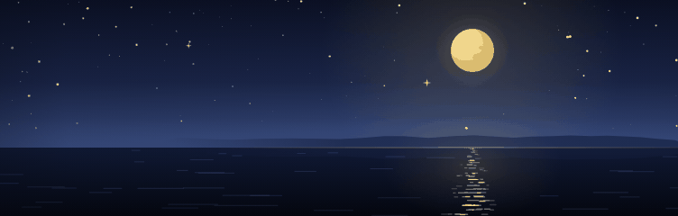
Other QuestsSample quest · Lv 50
other@2x.pngThe moon road itself: calm water, a low far shore and a wide sky of stars.Ornament atlas
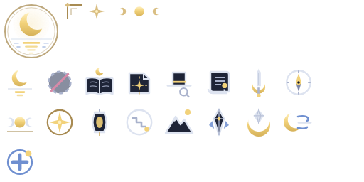
ornaments@2x.png · 512 × 256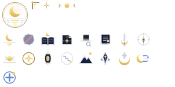
ornaments.png · 256 × 128all-questsremovedchronicleschronicles-of-lighthildibrandside-storyrelicendeavorsotherspecialfestivaldeep-dungeonregion-coerthasregion-mordhonamoonlitflightplan-fallback